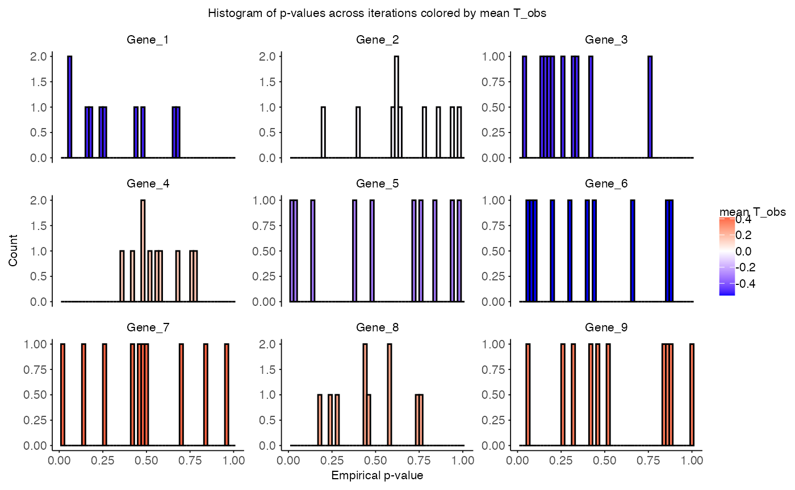
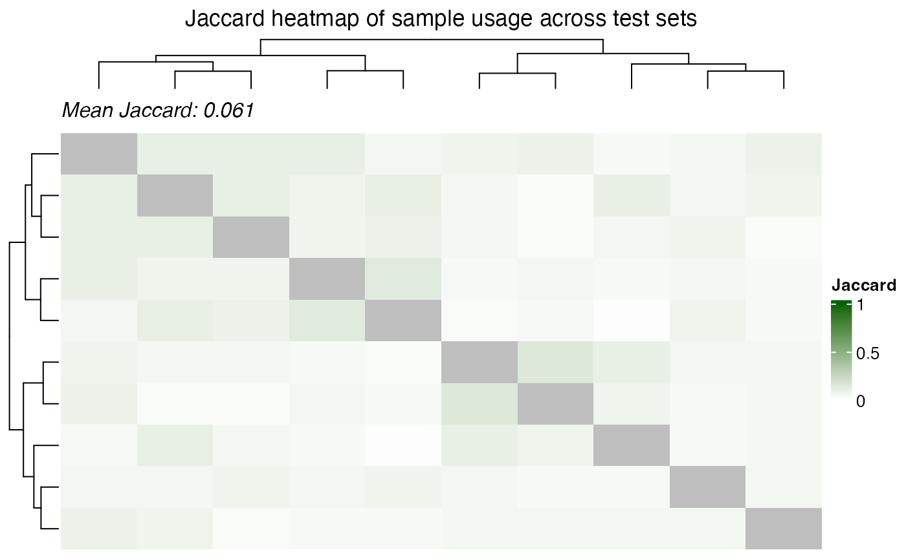
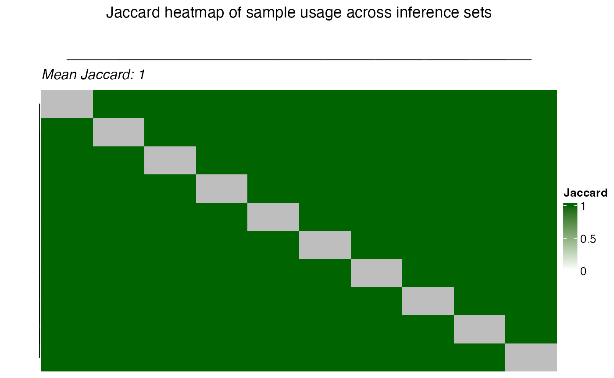
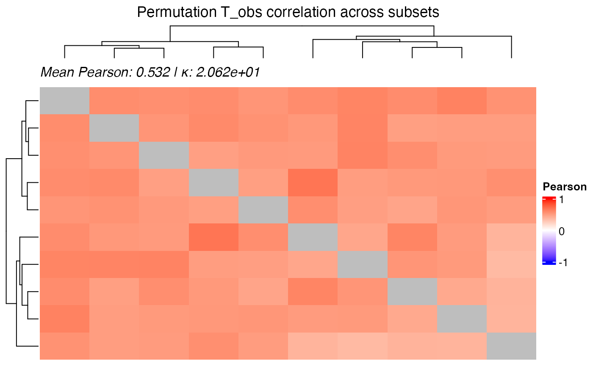
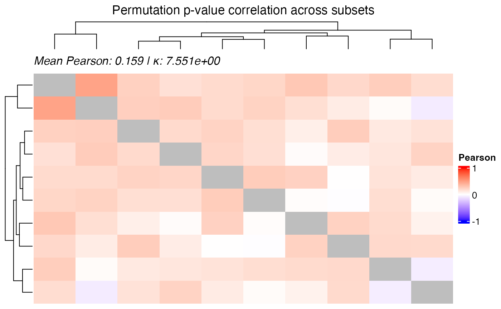

This vignette demonstrates how to perform a repeated subset-based permutation test across ancestries, assess dependence across iterations, and aggregate the results using methods that account for iteration-level correlation.
Data setup
In this example we can see a common scenario where EUR ancestry has a larger sample size than another (AFR).
library(CrossAncestryGenPhen)
library(ggplot2)
#> Warning: package 'ggplot2' was built under R version 4.3.3
# Seed for reproducibility
seed <- 42
set.seed(seed)
# Simulate example data
p <- 100 # Number of genes
n_EUR <- 600
n_AFR <- 40
# Expression matrices for EUR and AFR ancestries
X <- matrix(rnorm(n_EUR * p), nrow = n_EUR, ncol = p)
Y <- matrix(rnorm(n_AFR * p), nrow = n_AFR, ncol = p)
colnames(X) <- colnames(Y) <- paste0("Gene_", seq_len(p))
# Metadata for EUR and AFR ancestries
# EUR: overrepresented compared to AFR
MX <- data.frame(
condition = factor(c(rep("H", 400), rep("D", 200))),
ancestry = "EUR"
)
# AFR: underrepresented compared to EUR
MY <- data.frame(
condition = factor(c(rep("H", 10), rep("D", 30))),
ancestry = "AFR"
)
# Visualize sample size imbalance
meta <- rbind(MX, MY)
# Plot
ggplot(meta, aes(x = ancestry, fill = condition)) +
geom_bar(position = "dodge", color = "black") +
labs(
title = "Condition Imbalance Across Ancestries",
x = "Ancestry",
y = "Sample Count",
fill = "Condition"
) 
Loop run with multiple subsets
In the next step we will create the stratified subset to account for sample size but also control for the condition imbalance in the underrepresented ancestry (AFR).
# Set parameters
g_col <- "condition"
a_col <- "ancestry"
stratify_cols <- c("condition")
# Number of subsets and permutations
n_iter <- 10
B <- 100
# Track results and sample ids
perm_results <- list()
id_log <- list()
# Loop through iterations
for (i in seq_len(n_iter)) {
# Stratified ancestry sets
split <- split_stratified_ancestry_sets(
X = X,
Y = Y,
MX = MX,
MY = MY,
stratify_cols = stratify_cols,
seed = seed + i
)
# Store sample id usage with role (train, test, inference) and iteration
id_log[[i]] <- track_sample_ids(split, i)
# Run permutation difference interaction analysis
perm_res <- perm_interaction(
X = split$test$X,
Y = split$inference$X,
MX = split$test$M,
MY = split$inference$M,
g_col = g_col,
a_col = a_col,
B = B,
seed = seed + i
)
# Add up perm result
perm_stats <- perm_res$summary_stats
perm_stats$iteration <- i
perm_results[[length(perm_results) + 1]] <- perm_stats
}
# Combine across iterations
perm_combined <- do.call(rbind, perm_results)
id_usage <- do.call(rbind, id_log)Output
The output will contain the combined permutation results across all iterations.
head(perm_combined, 10)
#> feature T_obs SE CI_lower CI_upper p_value p_adj
#> 1 Gene_1 -0.42964519 0.5219826 -1.49949237 0.4687023 0.45 0.8596491
#> 2 Gene_2 0.03005561 0.5150510 -0.95715769 0.9960202 0.99 0.9900000
#> 3 Gene_3 -0.34510354 0.3823954 -1.04333659 0.3216515 0.34 0.7906977
#> 4 Gene_4 -0.31790285 0.5697235 -1.27224010 0.6352423 0.59 0.9268293
#> 5 Gene_5 -0.21040408 0.6188076 -1.32794492 0.9799602 0.76 0.9268293
#> 6 Gene_6 -0.22639552 0.5089008 -1.13910032 0.6553430 0.67 0.9268293
#> 7 Gene_7 0.37994413 0.4952830 -0.68032629 1.2806535 0.48 0.8596491
#> 8 Gene_8 0.37742283 0.5792796 -0.78560858 1.4871481 0.46 0.8596491
#> 9 Gene_9 0.42564843 0.4999762 -0.49588042 1.2978366 0.43 0.8596491
#> 10 Gene_10 0.70502336 0.4105457 -0.08001494 1.5618394 0.08 0.7692308
#> iteration
#> 1 1
#> 2 1
#> 3 1
#> 4 1
#> 5 1
#> 6 1
#> 7 1
#> 8 1
#> 9 1
#> 10 1With this information we can plot the pvalue distribution. The
function plot_pvalue_distribution() will plot the
distribution of p-values across iterations.
plot_pvalue_distribution(
x = perm_combined,
features = NULL,
aggregation_fun = mean,
title = "Histogram of p-values across iterations colored by mean T_obs"
)
Dependence of output
Because each iteration uses the same samples from the
underrepresented ancestry (AFR) and some EUR samples are shared across
iteration, there is a dependence of across iterations. This sharing of
samples can be visualized using the plot_jaccard_heatmap()
function.
plot_jaccard_heatmap(
id_usage = id_usage,
role = "test",
title = "Jaccard heatmap of sample usage across test sets",
)
plot_jaccard_heatmap(
id_usage = id_usage,
role = "inference",
title = "Jaccard heatmap of sample usage across inference sets",
)
The dependence of iterations is also visible in the correaltion of
the test statistics across iterations. This can be visualized using the
plot_correlation_heatmap() function.
plot_correlation_heatmap(
x = perm_combined,
value_col = "T_obs",
title = "Permutation T_obs correlation across subsets",
)
For demonstrations also the correlation of p-values can be visualized.
plot_correlation_heatmap(
x = perm_combined,
value_col = "p_value",
title = "Permutation p-value correlation across subsets",
)
Aggregation of iterations
Test statistics aggregation
Ultimately, we aim to consolidate the results from multiple
iterations into a single, aggregated summary. A simple method might be
to compute the mean/median of the test-statistics across iterations.
However, this approach assumes that the iterations are independent — an
assumption that often does not hold when sample splits are reused or
overlap. To properly account for this inter-iteration dependence, we use
Generalized Least Squares (GLS) to aggregate the test statistics. GLS
incorporates the correlation structure among iterations, yielding a
statistically more valid and efficient estimate of the overall effect.
The function param_gls_summary() implements this approach
under the assumption that the test statistics are approximately normally
distributed.
aggregated_res <- param_gls_summary(
x = perm_combined,
alpha = 0.05
)
head(aggregated_res, 10)
#> feature mean_T_obs estimate SE p_value p_adj prop_signif
#> 1 Gene_1 -0.51273655 -0.4150674 0.2750721 0.13131401 0.5176225 0
#> 2 Gene_2 -0.02055961 -0.1384291 0.3450088 0.68824815 0.8763284 0
#> 3 Gene_3 -0.50646746 -0.5523848 0.3095451 0.07434163 0.4956109 0
#> 4 Gene_4 0.16240135 0.1020506 0.3944088 0.79583327 0.9007285 0
#> 5 Gene_5 -0.31859514 -0.3124381 0.4017658 0.43676820 0.8209000 0
#> 6 Gene_6 -0.54937228 -0.5676910 0.3669325 0.12183269 0.5176225 0
#> 7 Gene_7 0.41680189 0.1715479 0.3466535 0.62069299 0.8647721 0
#> 8 Gene_8 0.25377788 -0.1844330 0.3500464 0.59827593 0.8647721 0
#> 9 Gene_9 0.37180669 0.2995121 0.3929146 0.44589110 0.8209000 0
#> 10 Gene_10 0.49220789 0.6126130 0.3100895 0.04820005 0.4432767 0However, GLS has limitations, the covariance matrix is not allowed to be singular as the inversion might fail.